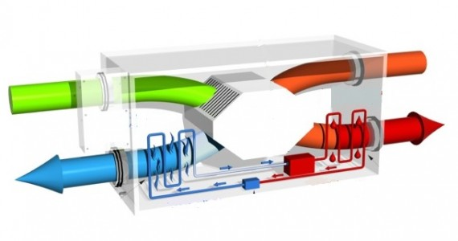

OK
Do Dzieła
1. Rezonator Helmholtza jest stosowany
A. w układzie zasilania silnika.
B. w układzie dolotowym silnika.
C. w układzie wylotowym silnika.
D. w układzie zapłonowym silnika.
2. Wartość stopnia sprężania silników z zapłonem iskrowym w stosunku do silników z zapłonem samoczynnym jest:
A. zawsze większa.
B. zawsze równa.
C. porównywalna.
D.mniejsza
3. Pierwsze, w dziejach motoryzacji elektroniczne urządzenie sterujące – system Motronic firmy Bosch – używano do sterowania:
A. skrzynką przekładniową.

B. układem przeciwpoślizgowym.

C. centralnym blokowaniem drzwi.
D. układem wtryskowo-zapłonowym.
4. Urządzenie (elektryczne bądź hydrodynamiczne) służące do długotrwałego hamowania pojazdu, stosowane w samochodach ciężarowych o dużej ładowności i w autobusach, to:
A. rekuperator.

B. rezonator.

C. dyfuzor.
D. retarder
5. Zasilanie silnika zbyt bogatą mieszanką paliwowo-powietrzną objawia się pokryciem izolatora Świecy zapłonowej osadem w kolorze :
A. czarnym.
B. błękitnym.
C. brunatnym.

D. białoszarym.

6. W silniku czterocylindrowym w układzie rzędowym strzałki na rysunku pokazują ustawienie wałków rozrządu w końcu suwu sprężania (GZP) dla tłoka:
A. pierwszego cylindra.
B. czwartego cylindra.
C. trzeciego cylindra.
D. drugiego cylindra
7. Liczba oktanowa paliwa jest wskaźnikiem:

A. wartości opałowej paliwa.
B. odporności paliwa na samozapłon.
C. skłonności paliwa do samozapłonu.
D. odporności paliwa na spalanie detonacyjne.
1. Numer identyfikacyjny pojazdu przyjętego na stacji obsługi ma postać VF1BA0D0524011679. Korzystając z danych w tabeli można stwierdzić, że pojazd został wyprodukowany:
A. w Niemczech.
B. we Włoszech.
C. w Hiszpanii.
D. we Francji.
2. Mechanizm różnicowy w tylnym moście napędowym samochodu zapewnia rozdział napędu na:
A. koła napędowe, przy jednoczesnym braku możliwości toczenia się kół z różnymi prędkościami obrotowymi.
B. koła napędowe, przy jednoczesnej możliwości toczenia się kół z różnymi prędkościami obrotowymi.
C. tył i przód z pominięciem przekładni głównej mostu napędowego.
D. przód i tył, w przypadku samochodu z napędem na cztery koła.
3. Dopuszczalna różnica wskaźnika skuteczności hamowania kół na jednej osi nie może przekraczać:
A. 30%
B. 25 %
C. 20 %
D. 10 %

4. Przedstawiony schemat ilustruje:

A. kąt pochylenia koła.

B. promień zataczania kół.

C. zbieżność połówkową kół.

D. kąt pochylenia osi sworznia zwrotnicy.

5. Na rysunku przedstawiono element:
A. przegubu krzyżakowego.
B. układu hamulcowego.
C. sprzęgła tarczowego.
D. układu zawieszenia
6. Prezentowany wynik badania zawieszenia metodą EUSAMA wskazuje,że skuteczność tłumienia amortyzatorów jest:

A. dobra.
B. dostateczna.
C. bardzo dobra.
D. niedostateczna.
7. W klasyfikacji olejów American Petroleum Institute /API/ symbolem GL oznacza się olej:
A. do silników o ZI.
B. do silników o ZS.
C. przekładniowy.

D. hydrauliczny.
8. Płyn eksploatacyjny oznaczony symbolem 10W/40 to:
A. płyn chłodzący silnika.
B. płyn do spryskiwacza.
C. płyn hamulcowy.
D. olej silnikowy.

1. Skrót TPMS (Tire Pressure Monitoring System) na tablicy rozdzielczej samochodu informuje, że pojazd wyposażony jest:
A. w układ przeciwpoślizgowy.
B. w diagnostyczne złącze komunikacyjne.
C. w system sterowania aktywnym zawieszeniem.
D. w system monitorowania ciśnienia w oponach kół.
2. Na noniuszu suwmiarki mierzącej z dokładnością 0,05 mm znajduje się:
A. 10 kresek.
B. 20 kresek.
C. 40 kresek.
D. 50 kresek.
3. Do sprawdzenia luzu zaworowego niezbędny jest:
A. passametr.
B. mikrometr.
C. szczelinomierz.
D. głębokościomierz.
4. Za pomocą urządzenia BHE-5 można zdiagnozować układ:
A. kierowniczy.
B. hamulcowy.
C. zapłonowy.
D. napędowy.
5. Liczba 1,74 [m-1] na prezentowanym obok rysunku informuje o zmierzonej wartości:
A. stopnia pochłaniania światła (skala liniowa).
B. współczynnika pochłaniania światła (skala logarytmiczna).
C. współczynnika składu powietrza (skala logarytmiczna).
D. stopnia sprężania (skala logarytmiczna).
6. Niewłaściwe rozpylenie wtryskiwanego paliwa, objawiające się wzrostem ilości sadzy w spalinach ponad wartości graniczne, nie może być spowodowane:
A. nieszczelnością głowicy.
B. nieszczelnością rozpylacza.
C. zbyt niskim ciśnieniem wtrysku.
D. zużyciem otworów wylotowych rozpylacza.
7. Zbyt duże zadymienie spalin w silniku z zapłonem samoczynnym może być spowodowane:
A. nieszczelnością głowicy.
B. uszkodzeniem świecy żarowej.
C. zbyt niskim ciśnieniem wtrysku.
D. zbyt dużą dawką dostarczanego powietrza.
8. Łączny koszt naprawy (koszt wymienianego elementu i koszt wymiany) elementu, zgodnie ze specyfikacją zamieszczoną w tabeli, przy cenie 1 rbg. 50 zł i 10% rabacie na wykonanie naprawy, wynosi:
A. 250 zł.
B. 315 zł.
C. 330 zł.
D. 350 zł.
9. Naprawa otworu, który w trakcie eksploatacji utracił wymiar nominalny, należy przeprowadzić metodą:
A. tulejowania.
B. nitowania.
C. lutowania.
D. spawania.
10. Przy zużyciu gładzi tulei cylindrowej mniejszym od kolejnego wymiaru naprawczego poddaje się ją regeneracji przez:
A. tulejowania.
B. nitowania.
C. lutowania.
D. spawania.
11. Wymiana klocków hamulcowych tylnej osi w pojazdach wyposażonych w EPB lub SBC wymaga:
A. wymiany płynu hamulcowego.
B. odpowietrzenia układu hamulcowego.
C. dezaktywacji zacisków hamulcowych.
D. równoczesnej wymiany tarcz i klocków hamulcowych.
12. Zużycie gładzi cylindrów mierzy się za pomocą:
A. Średnicówki czujnikowej.
B. suwmiarki modułowej.
C. głębokościomierza.
D. mikrometru.
13. Płyn chłodzący podczas jazdy samochodem osiągnął temperaturę 110 °C (czerwone pole na wskaźniku temperatury). Przyczyną może być:
A. zatarcie silnika.
B. przeciążenie alternatora
C. awaria układu chłodzenia
D. awaria układu klimatyzacji
14. Weryfikację kół zębatych, poprzez pomiar grubości ich zębów, można wykonać:
A. Średnicówką czujnikową.
B. suwmiarką modułową.
C. głębokościomierzem.
D. mikrometrem.
15. Zmierzony luz w zamku pierścienia tłokowego, włożonego do cylindra silnika po naprawie, wynosi 0,6 mm. Producent określa, iż luz ten powinien wynosić 0,25÷0,40mm. Otrzymany wynik oznacza, że:
A. luz jest zbyt mały.
B. luz jest zbyt duży.
C. luz mieści się w podanych zaleceniach.
D. luz zamka pierścienia należy powiększyć
16. Do grupy świateł sygnałowych samochodu należą:
A. Światła mijania.

B. Światła cofania.
C. Światła drogowe.
D. Światła hamowania.
17. Urządzenie do wyważania kół samochodowych jest wyposażeniem stanowiska do:
A. demontażu i montażu ogumienia.
B. sprawdzania zawieszenia samochodu.
C. badania ustawienia kół i osi samochodu.
D. badania układu hamulcowego samochodu.
18. Wykonując montaż wału napędowego, widełki obydwu przegubów krzyżakowych należy ustawić:
A. w płaszczyznach przesuniętych względem siebie o 45 stopni.
B. w płaszczyznach przesuniętych względem siebie o 90 stopni.
C. w dowolnym położeniu.
D. w jednej płaszczyźnie.
19. Ładowanie rozładowanego akumulatora powinno prowadzić się do czasu wystąpienia „gazowania” oraz uzyskania napięcie na ogniwie wynoszącego:
A. 1,75 V
B. 2,00 V
C. 2,20 V
D. 2,40 V
20. Wszystkie części chromowane i niklowane pojazdu poddanego konserwacji przed długotrwałym przechowywaniem należy pokryć:
A. preparatem silikonowym.
B. smarem miedziowym.
C. wazeliną techniczną.
D. smarem litowym.
21. W czasie przeprowadzania próby po naprawie pojazdu w układzie smarowania silnika stwierdzono samoistny wzrost poziomu oleju. Przyczyną tego stanu może być:
A. uszkodzenie pompy olejowej.
B. zużycie czopów wału korbowego.
C. nadmierne zabrudzenie filtra oleju.
D. uszkodzenie uszczelki pod głowicą.
22. Po wymianie końcówek drążka kierowniczego należy obowiązkowo sprawdzić i ewentualnie przeprowadzić regulację:
A. zbieżności kół przednich.
B. zbieżności kół tylnych.
C. ustawienia świateł.
D. wyważenia kół.
23. Na podstawie zamieszczonego wyniku uzyskanego podczas badania spalin, zawartości węglowodorów wynosi:
A. 0.06 %
B. 35 ppm
C. 15.30 %
D. 0.907
24. Zachodzi najczęściej przy małych prędkościach i dużych naciskach – w warunkach niedostatecznego smarowania lub jego braku. Występy, nierówności powierzchni są wówczas sczepiane, a następnie Ścinane. Jakiego rodzaju zużycia dotyczy opis:
A. Adhezyjnego.
B. Chemicznego.
C. Mechanicznego.
D. Elektrochemicznego
25. Pomimo obracania wału korbowego rozrusznikiem silnik nie daje się uruchomić. W takiej sytuacji sprawdzenia nie wymaga:
A. ustawienie rozrządu silnika.
B. zawór recyrkulacji spalin.
C. ciśnienie sprężania.
D. pompa paliwa.